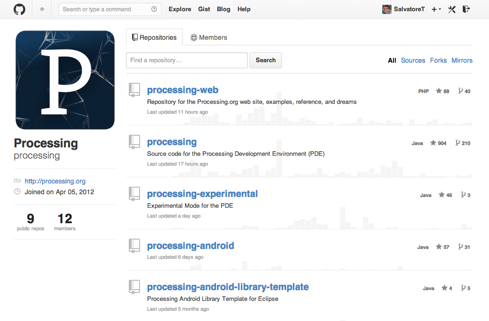

COLL 142 - Week 01
User Interfaces in Processing
Salvatore "Sal" Testa /
@saltesta14
What is Processing?

Why am I having trouble with serial communication?
You didn't read the serial communication configuration documentation!
I don't blame you.
Without serial communication
With serial communication
Catch it?!